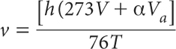

This method is based on measurement of pressure change with time (constant temperature) via a manometer in a closed system, as CO2 is evolved following reaction of carbonate with a solution of HCl-FeCl2. Ferrous chloride (FeCl2) is incorporated to prevent interference from reactions of manganese dioxide (MnO2) with OM in the presence of HCl (Martin and Reeve 1955). Calcite (or limestone) can be estimated separately from dolomite because the reaction rate of the former is more rapid. Fine grinding to <0.5 mm helps ensure the reagents have sufficient surface area to achieve complete reaction with contained carbonates. The effervescent chemical reaction based on calcite is as follows:
CaCO3 + 2HCl → H2 O + CO2↑ + Ca2+ + 2Cl−
4 M Hydrochloric Acid
Dilute 400 mL of 10 M HCl by adding acid to water, mix and make volume to 1.0 L with deionised water.
HCl-FeCl2 Solution
Dissolve 30 g ferrous chloride (FeCl2.4H2O) in 1.0 L of 4 M HCl immediately prior to use.
Acid-washed Sand
As for Method 15B1. Alternatively, treat a batch of high-grade silica sand with 5.5 M HCl in the same proportions described in this procedure. Subsequently, wash the sand free of any residual acidity with deionised water, oven-dry (105°C), cool and store.
Into a clean 20 or 25 mL vial, weigh 5.0 g air-dry soil (<0.5 mm). There should be sufficient carbonate present to give a final manometer reading of 80–100 mm Hg. If <5.0 g soil is needed, add a corresponding weight of Acid-washed Sand to the vial. Float the vial plus soil on 30 mL HCl-FeCl2 Solution in a 700 mL wide mouth reaction bottle.
Insert a two-hole stopper carrying a thermometer and a glass tube (fitted with a gas-tight stopcock) into each reaction bottle (the seal should be gas tight). Clamp the reaction bottles into a wrist-action shaker and connect a Hg manometer (or a hand-held gauge and differential manometer, such as Omega Engineering’s PCL-200 series or equivalent; Anon 1996). Arrange the apparatus so that at least the reaction bottle is maintained at ≈25°C in a waterbath or constant temperature room. After checking the zero reading of the manometer, set the shaker in motion (contents of the vial must make contact with the HCl-FeCl2 Solution) and with vigorous shaking (and the stopcock open) make periodic readings of the manometer until no change in pressure occurs. Temperature should also be recorded and if not at 25°C, an appropriate correction should be made (see Note 1); heat of neutralisation is unlikely to raise temperature appreciably. Use insulated gloves to prevent heat transfer when handling the reaction bottles. Also react a known weight (e.g. 0.05 g) of pure, dry CaCO3 as a check on the analytical procedure, the equipment and the quality of reagents. Method 19B2 provides examples.
Subtract manometer readings (Ht1; Ht2; Ht3; etc), recorded at each time interval from the final manometer reading (Hf). Plot log (Hf–Ht) against time (s); log-linear graph paper or spreadsheet is convenient. Extrapolate the straight-line portion of the plot occurring after about 60 sec to zero time. This intercept value (Hd) represents CO2 derived from dolomite; the difference between the final reading and the intercept (Hf–Hd) represents CO2 from calcite (or limestone). Examples are given in Figure 19.1.
Convert these values to g CO2 by means of a standard curve (or regression equation) prepared by measuring CO2 evolved from different amounts of CaCO3. The deficit in weight of CaCO3 from that of a 5 g soil sample should be compensated for by addition of acid-washed sand.
Determine actual weights of CO2 from calcite and/or dolomite using theoretical CO2 contents of 43.97% and 47.73%, respectively: see Note 2 for additional examples. Adjust for weight of soil used.
Report % CaCO3 (calcium carbonate) and % CaCO3•MgCO3 (dolomite) on an oven-dry basis. Use the air-dry moisture to oven-dry moisture ratio for the oven-dry conversion. Refer to Method 2A1 for guidance with regard to this soil moisture calculation.
Figure 19.1. Curves plotted on log-linear graph paper (or with a graphing package) showing a technique for separation of calcite from dolomite.
1. Volume of gas at normal temperature and pressure in a system containing Va mL HCl is given by the manometric formula:

where
v = volume of CO2 in mL;
V = net volume of the system in mL;
T = absolute temperature;
α = Bunsen absorption co-efficient of CO2 in HCl;
h = pressure expressed as cm of mercury (Hg).
Relevant values (ICT 1928) for the Bunsen absorption co-efficient (α) of CO2 in HCl are given in Table 19.2.
2. Additional carbonate/CO2 conversion factors include: CO3 = CO2 × 1.3635; CaCO3 = CO2 × 2.2743; CaCO3•MgCO3 = CO2 × 2.0951; CaCO3•MgCO3 = CaCO3 × 0.9212.
Table 19.2. Values for the Bunsen absorptŠn co-efficient (α) of CO2 in HCl at two temperatures (ICT 1928).
|
Temperature |
|
HCl molarity |
15°C† |
25°C† |
0.5 |
0.989 |
0.738 |
1.0 |
0.974 |
0.732 |
2.0 |
0.948 |
0.728 |
† For pure water: α15°C = 1.014 and α25°C = 0.756.